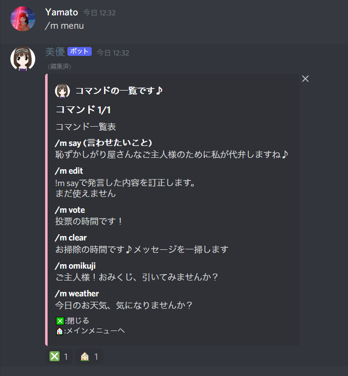
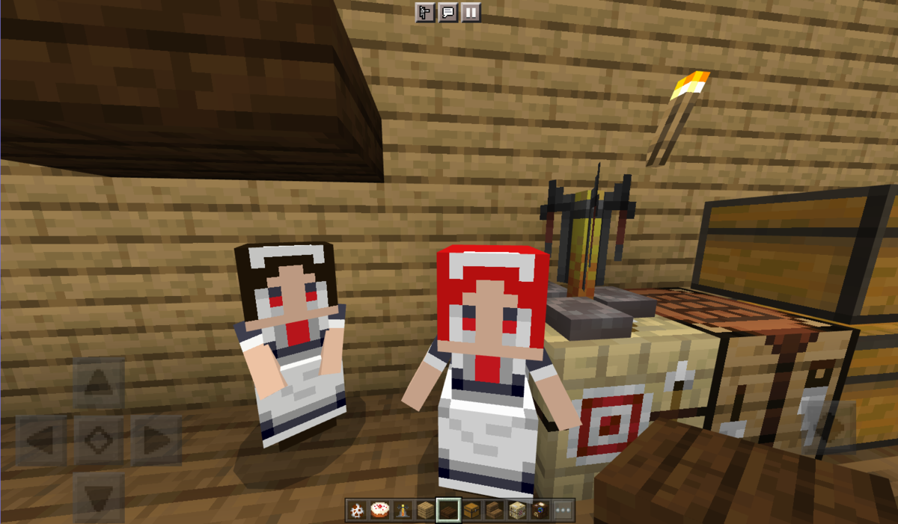

今まで製作したものを紹介します。
|  |
私が高校生の時に初めて作ったDiscordボットです。 Glitchというサービスを利用して、JavaScriptで作成しました。初めてのJavaScriptだったので、コードが汚いですが、一応GitHubにあげてあります。機能としては、 ・投票 ・メッセージをまとめて削除 ・天気予報の取得 ・Discordサーバーの人が入ってきた際の自動挨拶 などです。 |
|---|
|  |
統合版マインクラフト(スマホ版やWindows10版)にメイドを追加するアドオンです。 肉を焼くことや、ついてくるくらいの機能しかありませんが、一応載せておきます。 ダウンロードはこちらからできます。(私のブログに飛びます) |
|---|